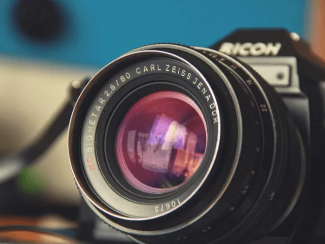
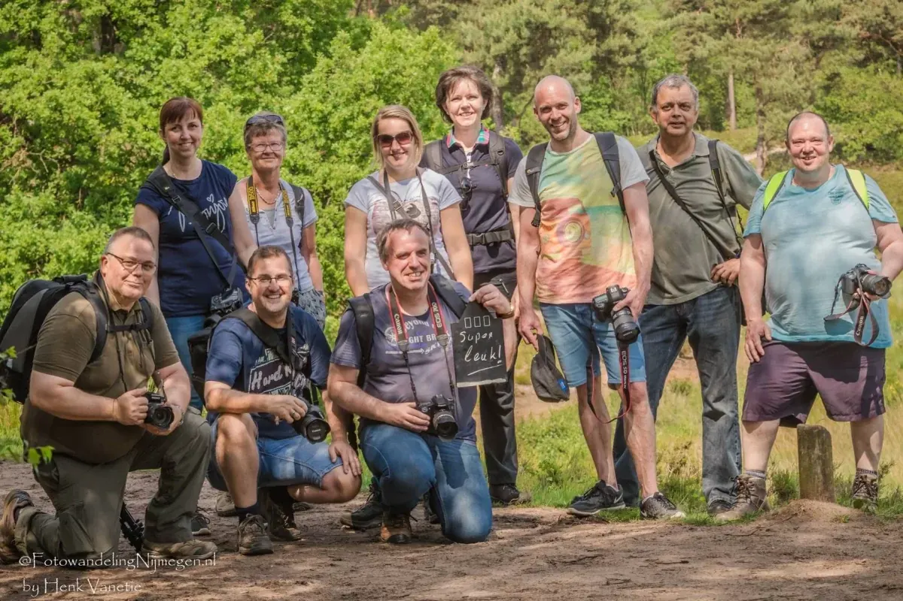
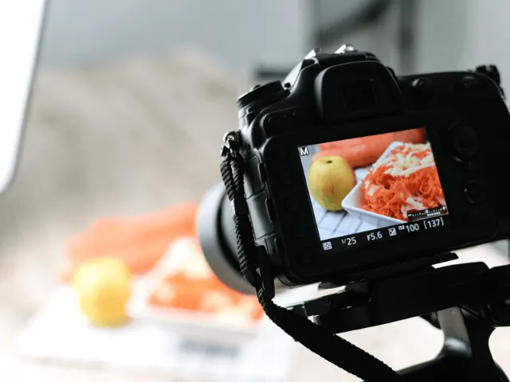
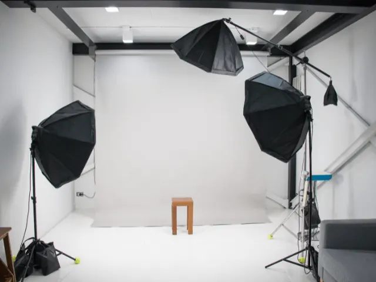
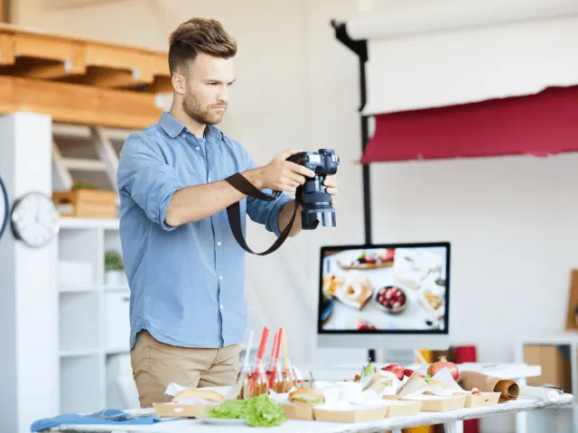
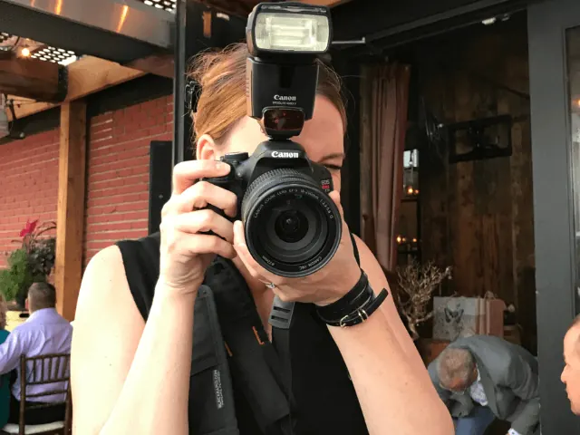

Fotografie Workshops Nijmegen
Gepubliceerd op 28 november 2023, bijgewerkt op 26 mei 2025
Onderdeel van de gids Cursussen in Nijmegen en Fotografie in Nijmegen
Welkom in de wereld van fotografie in Nijmegen, waar cursussen en workshops je meenemen op een creatieve reis door de lens van je camera. De fotografiecursussen en workshops van onderstaande bedrijven, gelegen in het schilderachtige Nijmegen, zijn ontworpen om fotografen van elk niveau te inspireren en te ontwikkelen.
Van de basisbeginselen van digitale- tot geavanceerde technieken en artistieke expressie, onze cursussen bieden een breed scala aan mogelijkheden om je vaardigheden te verfijnen en je creatieve visie te verdiepen. In een stad rijk aan cultuur en geschiedenis, biedt Nijmegen een perfecte achtergrond om je fotografische avontuur te starten of voort te zetten.
De workshops bieden praktische ervaringen in verschillende genres, van straatfotografie tot landschappen, portretten en meer. Je leert niet alleen over camera-instellingen en compositie, maar ook hoe je een verhaal kunt vertellen met je beelden en je eigen unieke stijl kunt ontwikkelen.
De cursussen worden geleid door ervaren fotografen en leraren die hun kennis en passie delen in een ondersteunende en stimulerende omgeving. Of je nu een hobbyist bent of een aspirant-professional, je vindt een cursus of workshop die bij je past en helpt je om je fotografie naar een hoger niveau te tillen.
Ontdek de schoonheid van Nijmegen en laat je inspireren door onze fotografiecursussen en workshops. Sluit je aan bij onze gemeenschap van creatieve geesten en start je fotografische reis vandaag nog!

Fotowandeling Nijmegen
Wil jij beter leren fotograferen en tegelijkertijd de mooiste plekken van Nijmegen ontdekken? Fotowandeling Nijmegen biedt inspirerende workshops en cursussen voor zowel beginners als gevorderden. Onder begeleiding van een ervaren fotograaf leer je niet alleen de technische kant van je camera kennen, maar ook hoe je unieke composities maakt en het perfecte moment vastlegt.
Ontdek de Cursussen van Fotowandeling Nijmegen
Basiscursus Fotografie – Zet de stap van ‘automatisch’ naar ‘handmatig’ en leer alles over sluitertijd, diafragma en ISO. Tijdens deze praktijkgerichte cursus ga je direct aan de slag en ontdek je hoe je controle krijgt over je camera.
Avond- en Nachtfotografie – De sfeervolle verlichting van Nijmegen biedt de perfecte setting voor magische nachtfoto’s. In deze workshop leer je hoe je met lange sluitertijden en een statief haarscherpe beelden vastlegt.
Natuurfotografie in de Ooijpolder – De groene omgeving van Nijmegen is een paradijs voor natuurfotografen. Leer hoe je landschappen, vogels en macrofotografie toepast om de schoonheid van de natuur vast te leggen.
Straatfotografie in het Centrum – Ontdek de dynamiek van de stad en leer hoe je spontane momenten, architectuur en mensen op een natuurlijke manier fotografeert. Ideaal voor wie creativiteit wil combineren met techniek.
Waarom Kiezen voor Fotowandeling Nijmegen?
- Persoonlijke begeleiding in kleine groepen
- Praktijkgerichte lessen op de mooiste locaties van Nijmegen
- Geschikt voor zowel beginners als gevorderden
- Direct toepasbare tips en technieken
Of je nu net begint of je vaardigheden verder wilt ontwikkelen, bij Fotowandeling Nijmegen maak je de stap van kiekje naar kunstwerk. Meld je aan en laat je inspireren door fotografie!

Foto Roos Fotografie in Nijmegen
Bij Foto Roos in Nijmegen ontdek je de kunst van fotograferen door onze inspirerende workshops en cursussen. Onze ervaren fotografen begeleiden je door de wondere wereld van de camera, waarbij je leert hoe je technische vaardigheden en creatieve visie kunt combineren om adembenemende beelden te creëren. Of je nu een beginnende liefhebber bent of je vaardigheden naar een hoger niveau wilt tillen, onze cursussen zijn ontworpen om je te voorzien van de kennis en praktische ervaring die nodig zijn om je fotografiepassie te ontplooien. In de inspirerende omgeving van Nijmegen biedt Foto Roos de ideale setting om je fotografische reis te beginnen of voort te zetten, met cursussen die zowel boeiend als informatief zijn. Cursussen en workshops die je bij Foto Roos kan volgen zijn:
- Cursus Lightroom
- Starters cursus fotografie
- Workshop Dierentuin Fotografie
- Workshop Staalwol
Tevens is het mogelijk om een begeleiding van één jaar af te nemen. Dan ga je samen in een groep één keer in de drie weken een opleiding volgen waarbij de volgende onderwerpen aan bod komen:
- Nachtfotografie
- Portretfotografie
- Fotojournalistiek
- Macrofotografie
- Kleur, zwart/wit
- Beweging
- Architectuur
- Flitstechniek

Foto Verweij in Nijmegen
Bij Foto Verweij in Nijmegen bieden we boeiende workshops en cursussen aan die geschikt zijn voor zowel beginners als gevorderde fotografen. Onze deskundige instructeurs delen hun passie en kennis met jou, zodat je de vaardigheden kunt ontwikkelen die nodig zijn om indrukwekkende en betekenisvolle foto’s te maken. In onze cursussen leer je alles over camera-instellingen, compositie, belichting en nog veel meer. Of je nu jouw eerste stappen in de fotografie zet of je bestaande vaardigheden wilt verfijnen, Foto Verweij zorgt voor een leerzame en inspirerende ervaring in het hart van Nijmegen, waar je jouw creativiteit de vrije loop kunt laten en je fotografische vaardigheden naar een hoger niveau kunt tillen.
Het mooie van Foto Verweij is dat ze een cursus aanbieden specifiek per type camera. Hiermee heb je dus echt een cursus op maat voor je Sony, Fujifilm, Canon of Nikon camera. Naast dit hebben ze zowel starters- als gevorderde workshops. Denk bijvoorbeeld aan een cursus Straatfotografie of Live Compositie.
Fotocursus Snapshot
Fotocursus Snapshot: Leg het Moment Vast in Nijmegen en Doetinchem
Ontdek de kunst van de fotograferen met Fotocursus Snapshot in Nijmegen, waar je leert hoe je alledaagse momenten omtovert tot buitengewone beelden. Deze cursus is perfect voor zowel beginners als degenen die hun fotografische vaardigheden willen aanscherpen. Met een focus op praktische technieken en creatieve inzichten, biedt Snapshot je de mogelijkheid om de wereld om je heen op een nieuwe manier te zien en vast te leggen. Of je nu geïnteresseerd bent in portret-, landschaps- of straatfotografie, deze cursus biedt de nodige vaardigheden en inspiratie om jouw fotografische reis te beginnen of voort te zetten.
Fotograaf Michael Basten zal je in diverse workshops en cursussen de fijne kneepjes bijbrengen van de camera. Michael bied verschillende opties aan waaronder:
- Basiscursus fotografie
- Vervolgcursus fotografie
- Jaartraject
- Privé les 1 op 1
- Workshop Smartphone fotografie
- Workshop Lightroom
De workshop smartphone fotografie zal je zeker helpen wanneer je veel foto’s maakt met je mobiele telefoon. Na deze workshop zal je geen kiekjes meer maken, maar vette foto’s. Daarnaast ga je leren hoe je scherp moet stellen, of juist hoe je een wazige achtergrond gaat krijgen. Om je foto na te bewerken ga je alle ins en outs leren van de app snapseed. Kortom; dit is een ideale workshop wanneer je binnen 3 uur gaat leren hoe je super stoere en vette foto’s je gaat maken.

Foto Cursus Focus
Breng je kennis naar een hoger niveau met een cursus van Foto Cursus Focus in Nijmegen. Deze cursus is ideaal voor iedereen die zijn vaardigheden wil verdiepen en meer uit zijn camera wil halen. Of je nu een enthousiaste amateur bent of een meer ervaren fotograaf, Foto Cursus Focus biedt je de kennis en technieken om je passie verder te ontwikkelen. Je leert over belangrijke aspecten zoals compositie, belichting, en de kunst van het vertellen van verhalen door beelden. Met een mix van theorie en praktijk, ontdek je nieuwe manieren om je creativiteit uit te drukken en leg je de schoonheid van de wereld om je heen vast.
Foto Cursus Focus heeft de volgende workshops en cursussen:
- Basiscursus
- Vervolgcursus
- Gevorderde cursus
- Cursus Adobe Lightroom
- Privé les
- Workshop Flitsen
Tijdens de workshop Flitsen ontdek je de kunst van ‘Off Camera Flash’, oftewel het werken met een externe flitser die niet direct op je camera gemonteerd is. Je gaat aan de slag met technieken om je foto’s aanzienlijk te verbeteren en je creatieve mogelijkheden te vergroten. Deze cursus biedt je de kennis en vaardigheden om te experimenteren met verschillende flitsposities en -instellingen, waardoor je een nieuwe dimensie aan je fotografie kunt toevoegen. Ontdek hoe een externe flitser je helpt om verbluffende effecten te creëren en de kwaliteit van je foto’s naar een hoger niveau te tillen.
De Opstap Fotografie in Nijmegen
De Opstap in Nijmegen is een veelzijdige organisatie die een breed scala aan cursussen aanbiedt, variërend van talen tot beeldende kunsten zoals keramiek en beeldhouwen. Onder deze creatieve en leerzame activiteiten vallen ook de cursussen ‘Fotografie en Fotobewerking Niveau 1’ en ‘Fotografie en Fotobewerking Niveau 2’.
De cursus ‘Fotografie en Fotobewerking Niveau 1‘ is ideaal voor beginners die zich willen verdiepen in de wereld en de basisbeginselen van fotobewerking willen leren. Deelnemers krijgen inzicht in verschillende fotografietechnieken, het gebruik van hun camera, en hoe zij hun foto’s kunnen verrijken en verbeteren door middel van basisbewerkingsprogramma’s. Deze cursus is een uitstekende start voor iedereen die zijn fotografische reis wil beginnen met een stevige basis.
Voor degenen die hun vaardigheden verder willen ontwikkelen, biedt ‘Fotografie en Fotobewerking Niveau 2’ een verdieping van de kennis. Deze cursus is bedoeld voor mensen die al enige ervaring hebben en zich verder willen specialiseren in geavanceerdere technieken van fotografie en fotobewerking. In deze cursus worden complexere aspecten behandeld, zoals geavanceerde composities en verfijnde bewerkingstechnieken, waardoor deelnemers hun vaardigheden naar een hoger niveau kunnen tillen.
Beide cursussen worden gegeven door ervaren docenten die hun kennis en passie voor fotografie graag delen. Met hun begeleiding en de interactieve lessen krijgen cursisten de kans om hun creativiteit te verkennen en hun technische vaardigheden te verbeteren. Of je nu je eerste stappen zet in de wereld van fotografie of je bestaande vaardigheden wilt aanscherpen, De Opstap in Nijmegen biedt een cursus die bij je past.

PHOC
Welkom bij PHOC, gelegen op het bruisende NYMA terrein in Nijmegen, waar passie voor fotografie centraal staat. Of je nu een beginner bent in de fotografiewereld of een doorgewinterde professional die op zoek is naar verdere verdieping, bij PHOC vind je een waaier aan mogelijkheden om je vaardigheden te ontwikkelen en je creatieve horizon te verbreden.
PHOC biedt een uitgebreid aanbod aan fotografiecursussen, workshops en jaartrajecten, allemaal verzorgd in onze sfeervolle studio. Onze ervaren docenten brengen je de fijne kneepjes van het vak bij, van de basisprincipes van fotografie tot geavanceerde technieken en stijlen.
Bij PHOC geloven we in een praktische, interactieve benadering van leren. Onze studio op het NYMA terrein biedt de perfecte setting om te experimenteren, te leren en te groeien onder de begeleiding van deskundige fotografen.
Naast cursussen en workshops, is PHOC ook de ideale plek voor een uniek bedrijfsuitje of een teambuilding activiteit. Kom samen met collega’s of vrienden en ontdek de kunst van fotografie terwijl je geniet van goede koffie en inspirerende gesprekken.
PHOC heeft standaard twee opties om je bedrijfsuitje tot een geweldig evenement te maken.
Workshop Portretfotografie bij PHOC Nijmegen
Ontdek de Kunst van Portretfotografie
Treed binnen in de wereld van portretfotografie bij PHOC Nijmegen. Deze workshop is een unieke kans om je collega’s van een andere kant te zien en samen creatieve vaardigheden te ontwikkelen. Onze ervaren fotografen geven een boeiende inleiding over de kernaspecten van portretfotografie, gevolgd door een praktische sessie in onze fotostudio. Of je nu een smartphone of je eigen camera gebruikt, je leert hoe je indrukwekkende portretten kunt maken.
Nabespreking en Groepsfoto
Na afloop van de workshop nemen we de tijd om de gemaakte foto’s te bespreken, waarbij we focussen op individuele stijlen en technieken. De workshop wordt afgerond met een groepsfoto, als blijvende herinnering aan deze creatieve en verbindende ervaring.
Workshop Polaroid bij PHOC Nijmegen
Ontdek de Wereld Door een Polaroidlens
Beleef een avontuurlijke en creatieve middag met onze Polaroid-workshop. Na een korte introductie over het gebruik van de direct-klaar camera, inspireren we je om creatief aan de slag te gaan. Met een lijst van uitdagende opdrachten gaan jullie in groepjes op verkenning in en rond het NYMA terrein.
Creatieve Uitdaging en Samen Bespreken
Deze workshop is perfect voor teambuilding, waarbij deelnemers hun creativiteit kunnen uiten en op een speelse manier samenwerken. Na de fotosessie komen we samen om de unieke resultaten te bespreken en te genieten van ieders creatieve interpretatie van de opdrachten. Het is een inspirerende en plezierige manier om fotografie te ervaren.

Conclusie
De reis door de fotografie workshops in Nijmegen laat ons zien dat een foto maken veel meer is dan het simpelweg vastleggen van momenten. Het is een vorm van kunst die geduld, vaardigheid en een uniek perspectief vereist. In Nijmegen hebben beginnende en ervaren fotografen de unieke kans om hun passie en technieken te verdiepen onder begeleiding van deskundige instructeurs die in dit artikel beschreven zijn. Deze workshops bieden niet alleen een platform voor technische groei, maar stimuleren ook creatieve expressie en persoonlijke ontwikkeling. Ze transformeren de manier waarop deelnemers naar de wereld kijken en hoe ze hun verhalen vertellen door de lens van hun camera. Nijmegen, met zijn rijke geschiedenis en levendige stadsgezichten, vormt het perfecte decor voor deze fotografische ontdekkingsreis. Ben je trouwens op zoek naar een andere cursus in nijmegen. Klik dan op deze link.
OVERZICHT FOTOGRAFEN IN NIJMEGEN
BEKIJKFotografen en videografen in Nijmegen
Zin om te beginnen? In onze bedrijvengids vind je alle 58 fotografen in Nijmegen, met openingstijden, kenmerken en een kaart.
Bekijk alle 58 fotografen in Nijmegen
Heb je zelf een fotograaf? Laat je hier uitlichten.